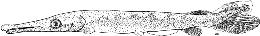

Family
LEPISOSTEIDAE (Gars)
Species
Lepisosteus oculatus (Winchell, 1864)
Common Name
Spotted Gar
Distribution
Where found: Lake Michigan, Lake Huron, Lake Erie
Native or non-native species: Native
Description
Egg (spawning to hatching)
Appearance and features
Attachment disc: Present
Spawning substrate location, features
Shallow water or shoals: Shallow, warm water where vegetation is abundant
Spawning strategies
Broadcast - demersal: Over aquatic plants, grass, debris and vegetation or over dead vegetation and algal mats
Other Spawning features
Spawning behavior: No parental care is given
Spawning season: March, April or May
Water temperature at spawning (degC): 16.0 degC, 20.0-30.0 degC
Yolk Sac Larvae - YSL (hatching to complete absorption of yolk)
Appearance and features (body)
Body shape: Not elongate, not eel-shaped
Gill openings on each side: Single
Adhesive disc on snout: Present with papillae
Chin barbels: Absent or not well developed
YSL Meristics (mm)
Total Length (TL) of yolk-sac larvae (mm): (7.0-)8.0-37.0 mm
Larvae (complete absorption of yolk to development of full complement of adult fin rays and absorption of finfold)
Appearance and features (body)
Body shape: Not elongate, not eel-shaped
Gill openings on each side: Single
Chin barbels: Absent or not well developed
Appearance and features (head and mouth)
Teeth: Visible
Larvae Meristics
Total length (mm): 38.0-150.0 mm
Pigmentation
Body: Pigmented, Body covered with numerous diffuse chromatophores
Additional Larval features based on size
38-50mm
Morphometry (as % of Total Length TL):
| head length | 30-33% |
| preanal length | 63-71% |
Morphometry (as % of HEAD Length):
| snout length | 60-63% |
Pigmentation: body covered with numerous diffuse chromatophores;
body below sensory lateral line darker than above lateral line; dark lateral pigment makes irregular intrusions into lighter dorso-lateral area; wide midlateral dark band evident (50.0mm) with dorsal intrusions of dark band on lighter dorso-lateral aspect; faint, wide midventral band of melanophores evident (50.0mm); dark midlateral band extends on to head; pectoral buds dark except dorsal margin; pelvic buds with dark spot at base; caudal, dorsal and anal fins darkly pigmented except near dorsal and ventral margins; pigmentation extends irregularly onto caudal appendage (38mm); dorsal and anal fins pigmented at base and tips
Fins: preanal finfold present; anal, caudal and dorsal fin rays formed (38mm); caudal appendage pronounced, extending into upper caudal lobe (50.0mm); pectoral fin bases broad, flap-like and fin rays absent; pectoral fin rays slightly differentiated; pelvic buds evident (30mm); pelvic fin rays evident (50mm)
100-150mm
Body: lateral line fully developed; scales evident on lateral aspect from caudal peduncle to region of pelvic fins; anterior belly and pelvic area without scales; squamation complete (140-150mm)
Fins: pectoral fin rays starting to develop (100mm); pectoral fin rays one-half to completely developed (130mm)
Family Notes
(by George R. Heufelder, from "Identification of Larval Fishes of the Great Lakes with Emphasis on the Lake Michigan Drainage," N. Auer editor, 1982)
The gars belong to a primative family having both living representatives as well as members known only from fossil record. The Lepisosteidae is comprised of 16 species from 2 genera, Lepisosteus and Atractosteus (Wiley 1976). Fossil records indicate that gars inhabited North America, Central America, Europe, India and Africa. Living representatives, however, are restricted to the western hemisphere from Costa Rica to southern Canada. Of the five living gars of North America, three are known from the Great Lakes basin. The longnose gar, C. osseus, occurs in the drainages of all of the Great Lakes, although to a limited extent in Lake Superior, while the shortnose gar, C. platystomus, and spotted gar, L. oculatus, have a more restricted range in the basin.
The gars are unique among North American fishes, being characterized by a long, attenuated snout with numerous teeth, abbreviated heterocercal tail and overlapping ganoid scales. The body is long and somewhat tubular. Spawning takes place in the spring in shallow vegetated areas. Eggs are broadcast and adhere to the underlying vegetation and substratum. No parental care is given.
With the exception of L. osseus, very little has been published regarding the larval development of gars. Larval gar superficially resemble the larvae of esocids, but can readily be distinguished by the presence of a “caudal appendage,” which is the upturned distal portion of the notochord, appearing as a large upper lobe of the caudal fin. Larval
gar remain attached to vegetation by an adhesive disc on the tip of the snout and are relatively inactive until the yolk is absorbed.
Lepisosteus oculatus, spotted gar. Larva, 17.5mm. Wild-caught, Florida, original illustration by N.A. Auer, specimen provided by University of Michigan Museum of Zoology, UMMZ 165168